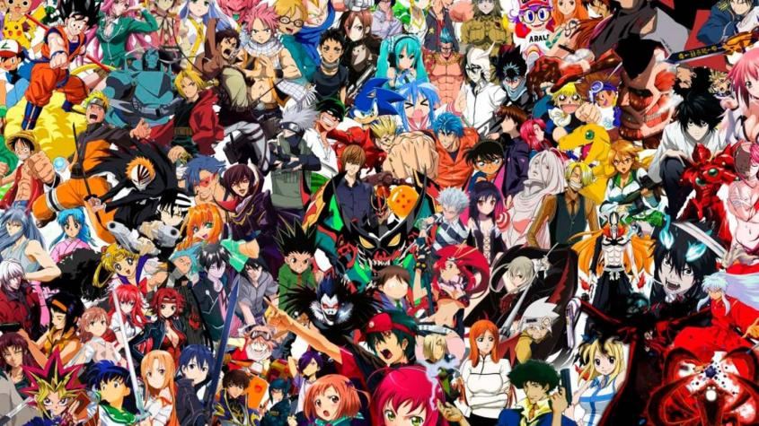
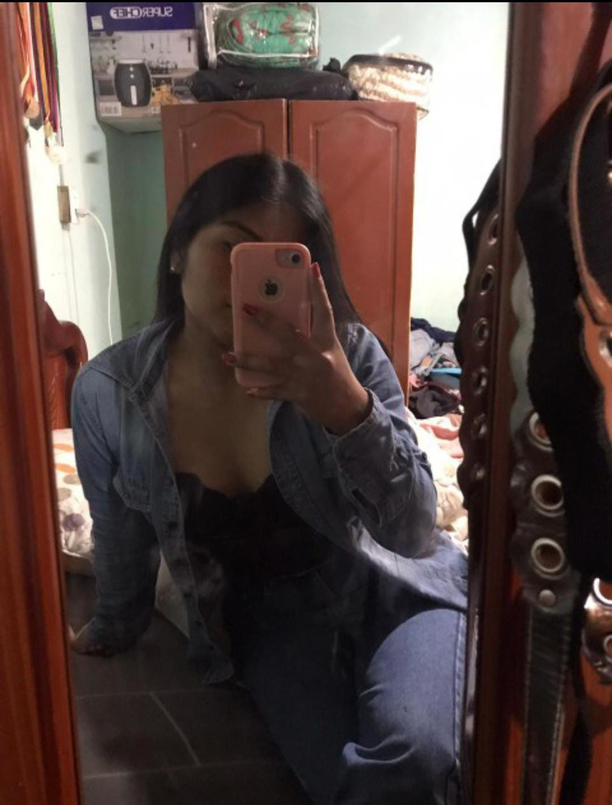

Dario nacio un 05 de octubre del 2001 en la actulaidad tiene 22 años y esta a un mes de cumplir 23 y su signo del zodicaco es libra .
Él es un chico que le gusta las cosas sencillas, pero a la vez gusta pasar mucho tiempo jugando en su computadora , viendo anime aunque se aburre muy rápido Su equipo favorito es el Emelec aunque no es que pasa pendiente de los partidos , su jugador favorito es Lionel Messi su actor favorito es Johnny Depp porque fue el primero hombre en ganarle una discusión a una mujer donde vieron miles de personas también Adam Sandler por sus películas que tratan de dar una motivación tine full actores favoritos pero esos son los más revolantes , la música que el escucha es de todo tipo le gusta música en inglés , rock, electrónica, salsa bachata , vallenatos ect.
Le gusta mucho ayudar a las personas es muy coqueto amigable, ama la playa es una persona que solo usa su 5 % de capacidades por que le aburre todo y cuando le interesa algo solo le dura un poco tiempo porque ya se encariña o ya quiere hacer otras cosas.
Los tipos de anime que le gusta a el son animes de acción de magia de comida de deportes el mas se centra en animes que desde el primer capitulo le llame la atención y el ve odia los animes en ingles le gusta solo ver animes en español aunque por eso deja de ver animes que están realmente buenos solo porque no están en español .

Este es mi top 10 de anime y comida que me gustan.
1. Black clover
2. Pizza
3. Blue look
4. Encebollado
5. Doraemon
6. Tallarín
7. Dragón ball
8. Bollos
9. The Rising of the Shield Hero
10. Corviches
Para mi este seria el top claro me guastan más cosas tanto en anime y comida solo
que estos son los animes y comida que me llaman la atención y que me gusta comer y ver.
Las relaciones que eh tenido a lo largo de mi vida jajaja han sido como 20 de las cuales solo 4 han marcado como mi vida ya que estas relaciones han sido algo fuera de lo normal y algo bonito pero desastroso.
Aquí explicare resumidamente las relaciones que tuve algunas estarán con foto y otras no.
La jossy fue una relación muy bonita más o menos como un cuento de hadas, pero eras dos personas muy distintas puede ser, porque cuando entre con ella tenía 13 años y yo 17 y a mí en ese tiempo me gustaba estar con una y con otra fue por eso que no funciono y por la edad también.
Con la Jenni fue algo muy diferente esa mujer me amaba ella me enseño amar, pero yo no supe cómo mantener una relación donde no podía salir y cosas así y así fue como cometí mis errores y terminamos, aunque en la actualidad hable con ella, esa mujer siente cosas por mí, pero por miedo a que le haga daño otra vez se pone con un corazón de acero que no deja que vuelva posdata te quiero fea.
Con la Andrea la relación fue la mejor pero igual no podía salir y eso mato todo aunque es una persona le gusta dar más tiempo a sus amigos a sus pareja y eso me cagaba así que por eso la termine pero es buena persona.
De esta relación solo dire que me enseñó a no creer en las promesas y que por más que sea linda en el fondo siempre va hacer una rata.
Espero no haberme funado yo mimos y ojala la página web que hice este bien jaja porque es mi primera vez programando en html asi saludos en la cola.
Aqui pongan su nombre y su opinion de la pagina web